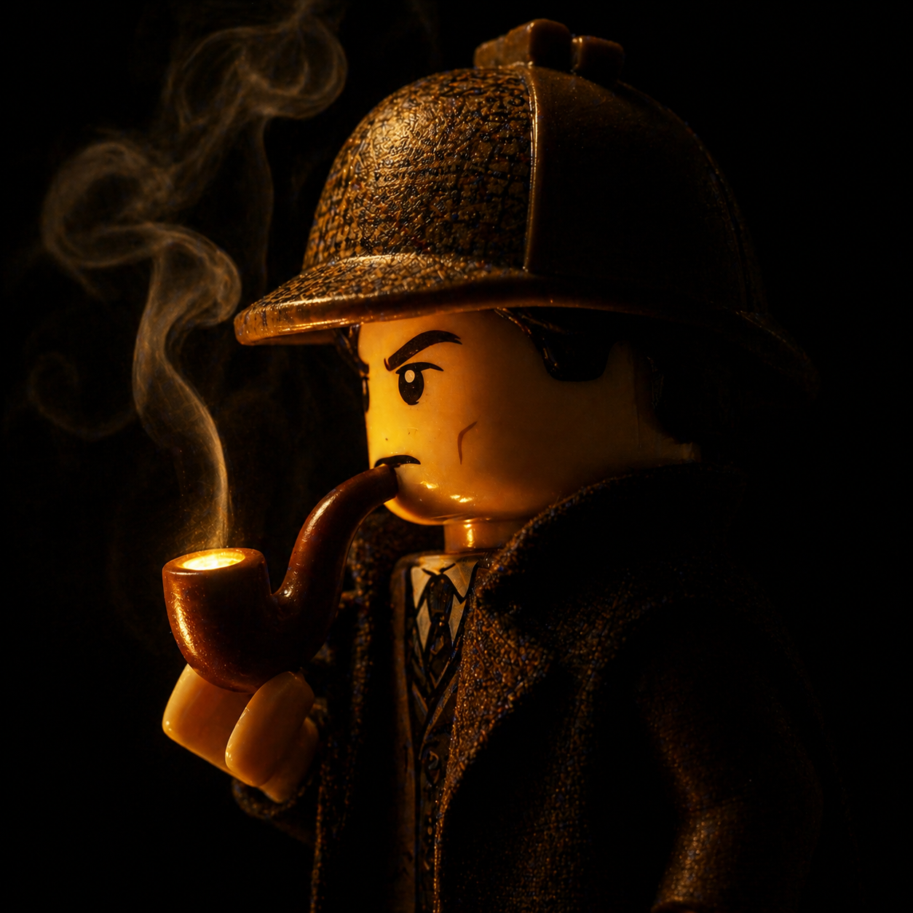
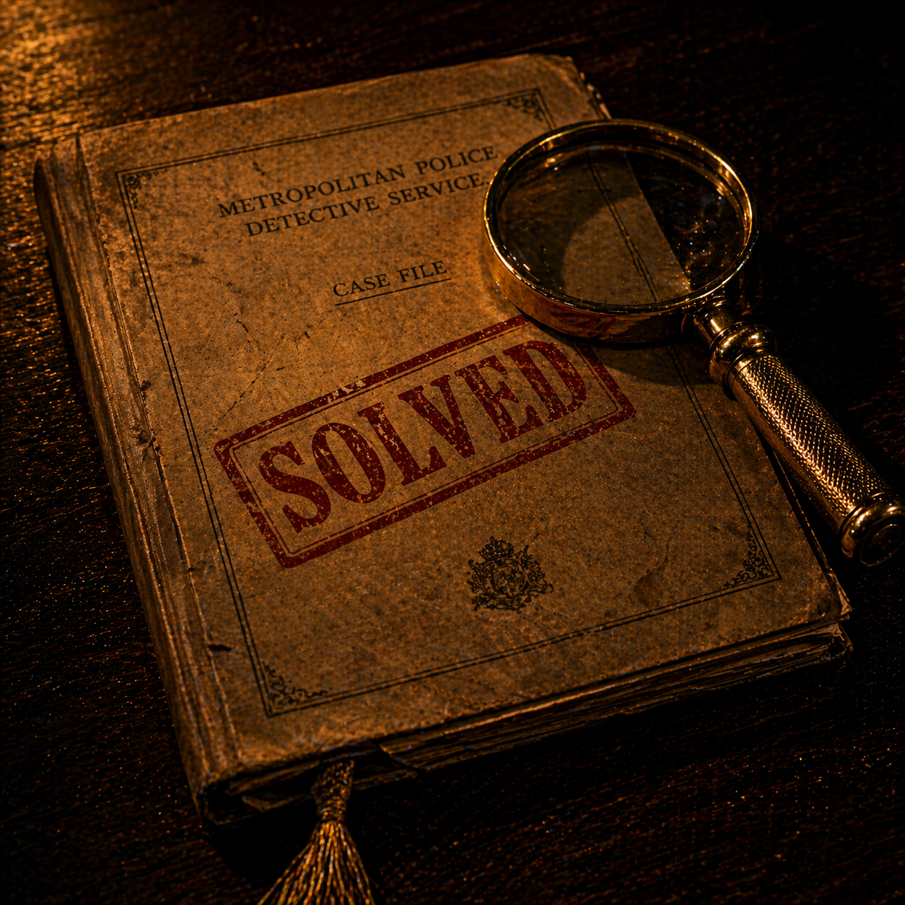

CLUE FOUND
Tap to continue →
👆 Tap to begin — then tap or drag your torch to find clues

Your First Case
Detective Jr.
Every great detective starts somewhere. Today, that's you.
A note from Sherlock Holmes:
"Every detective begins with their first case. Sharpen your eye. Trust the small details. The truth is hiding in the shadows — find it."
"Every detective begins with their first case. Sharpen your eye. Trust the small details. The truth is hiding in the shadows — find it."
📁 CASES SOLVED: 0
DET. JR · v23.11 · SEASON 1
Casebook
Season 1 — The Baker Street Files
CASE
001
EVIDENCE TO FIND
SCORE
0
CASE 001 · CH.1
HINTS
♪
🔍 ×3
🔍
📁 CASE 001 · CHAPTER 1
The King's Secret
YOUR CLUES — READ THEM CAREFULLY
What crime took place?
✗ Not Quite Right
The clues point somewhere else. Go back and find one more clue.
CHAPTER COMPLETE
Chapter 1 — Solved
DETECTIVE JR.'S NOTEBOOK
NEXT CHAPTER — EVIDENCE PREVIEW
WITNESS STATEMENT
Next chapter unlocks in
NOW →

Case Closed.
A Scandal in Bohemia — solved.
CASE RATING
★★★
CLUES FOUND
0/15
SCORE
0 pts
EXTRA TRIES
0
DETECTIVE JR.'S CONCLUSION